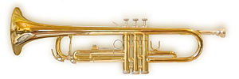

베를린필하모닉 트럼펫 수석 Gabor Tarkovi의 하이든 콘체르토(출처:유튜브)
트럼펫(Trumpet,문화어: 트롬페트)은 금관 악기 중에 가장 많이 쓰이는 악기로, 가장 높은 음을 낸다. 가장 흔히 쓰는 트럼펫은 내림 나 조의 이조 악기이다.
가장 넓은 뜻으로는 모든 금관 악기를 트럼펫이라고 총칭하는 경우도 있어 그 종류는 대단히 많으나, 오늘날 오케스트라에 쓰이는 트럼펫이라 하는 경우는, 특수한 경우를 제외하고 음높이를 변화시키기 위해서 밸브(valve)를 가진 밸브 트럼펫을 말한다. 이 악기는 마우스피스(mouthpiece), 취구관(吹口管), 주관(主管), 밸브, 벨(bell)의 5개의 금속제(일반적으로 놋쇠) 부분으로 되어 있다. 금관악기에서는 목관 악기와 같이 발음체로서의 리드가 없으며, 위·아래의 두 입술 자체가 겹서(double reed)의 역할을 한다. 그런 뜻에서 연주자의 입술은 악기의 가장 중요한 부분이다. 금관악기의 마우스피스는 이 입술의 역할을 도와 관의 본체로 진동을 전하는 부분이다. 그 기본적인 구조는 입술에 직접 대는 캡(cap)과 취구관(吹口管) 으로 연결되는 스로트(throat)로 되어 있다. 트럼펫을 포함하여 금관악기는 관의 길이가 일정하기 때문에 취주할 수 있는 음넓이는 자연배음렬(自然倍音列)에 속해 있는 것에 한정된다. 즉 입술을 세게 죄고 숨을 세게 불어넣음으로써 상위의 배음이 나게 된다. 그러므로 1개의 관으로는 반음계는 물론 옥타브 중의 모든 원음(幹音)도 연주할 수 없으므로, 이런 점을 해결하기 위하여 밸브로 관의 실질적 길이를 변화시키는 방법이 오늘날 쓰이고 있다. 여기에는 피스톤식과 로터리식의 2가지가 있는데, 현재 보급되고 있는 것은 피스톤 식으로서 3개의 피스톤을 가지고 있다. 이 3개의 피스톤의 조작으로 약간의 차이는 있으나 실용할 수 있는 반음계가 가능하다. 현재의 트럼펫은 밸브 외에 슬라이드(slide)라 불리는 발차관(拔差管)이 관의 중간에 장비되어 우회로(迂廻路)의 역할을 하며, 기본음률을 낮게 할 수 있는 것도 많다. 관 전체는 타원형으로 한 바퀴 감겨 있고 벨은 직경 12-14cm로 되어 있다. 금관 악기는 그 관의 길이에 따라 긴 관과 짧은 관의 두 가지 종류로 구분된다. 어떤 일정한 길이의 긴관은 그 절반길이의 짧은 관보다 동일 음을 연주하였을 때는 배음의 관계로 보다 아름답고 풍부한 음이 나온다. 그러나 짧은 관은 긴 관보다 높은 음의 취주(吹奏)가 쉽고 운동성도 낮다. 트럼펫의 밸브는 부는쪽에서 부터 1, 2, 3 으로 지정된다. 내림 나조의 트럼펫인 경우에는 1번 밸브를 누를 경우 한음이 내려가게 되고 2번 밸브를 누를 경우 반음, 3번 밸브를 누를 경우 한음 하고 반음이 내려가게 된다. 알기 쉽게 보자면 1번 밸브는 2번 밸브의 두배나 되는 길이이며, 3번 밸브는 2번 밸브의 세 배 길이다.